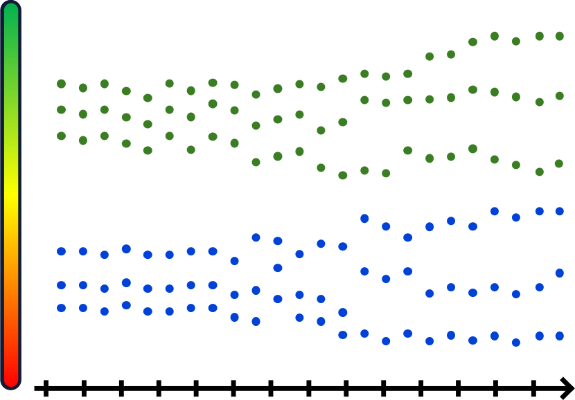
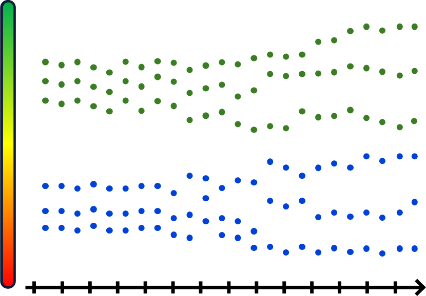

KNESSIGHT
Trends Analyzer for Israeli Politics
| Team: | Avi Sommer | Betzalel Yanir | Oryan Hassidim | HUJI |
| Advisors: | Mr. Effi Levi | Prof. Shaul Shenhav | Matan Levy | HUJI |
67547 Engineering Project Workshop
The Rachel and Selim Benin School of Computer Science and Engineering,
The Hebrew University of Jerusalem


 
